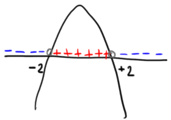
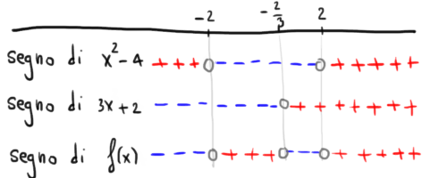

Una funzione prodotto è definita dal prodotto di una o più funzioni.
Ricordate che gli elementi moltiplicati tra loro vengono chiamati fattori.
Esempi di funzioni prodotto sono i seguenti: \[ \begin{align*} &f\left(x\right) = \underset{\color{gray}{}\text{1° fattore}}{\color{gray}{\underbrace{\color{black}{\left(5x +1\right)}}}} \,\,\color{red}{\cdot }\color{black}{}\,\, \underset{\color{gray}{}\text{2° fattore}}{\color{gray}{\underbrace{\color{black}{\left(-4x^2 +1\right)}}}} \\\\ &f\left(x\right) = \underset{\color{gray}{}\text{1° fattore}}{\color{gray}{\underbrace{\color{black}{\dfrac{2 -3x}{7x +1}}}}} \,\,\color{red}{\cdot }\color{black}{}\,\, \underset{\color{gray}{}\text{2° fattore}}{\color{gray}{\underbrace{\color{black}{\left(7x - 3\right)}}}} \\\\ &f\left(x\right) = \underset{\color{gray}{}\text{1° fattore}}{\color{gray}{\underbrace{\color{black}{x^5}}}} \,\color{red}{\cdot }\color{black}{}\, \underset{\color{gray}{}\text{2° fattore}}{\color{gray}{\underbrace{\color{black}{\left(2 + x\right)}}}} \,\,\color{red}{\cdot }\color{black}{}\,\, \underset{\color{gray}{}\text{3° fattore}}{\color{gray}{\underbrace{\color{black}{\sqrt{1 -x}}}}} \\\\ \end{align*} \]
| \(\boldsymbol{-}\) | \(0\) | \(\boldsymbol{+}\) | |
| \(\boldsymbol{-}\) | \(+\) | \(0\) | \(-\) |
| \(0\) | \(0\) | \(0\) | \(0\) |
| \(\boldsymbol{+}\) | \(-\) | \(0\) | \(+\) |
⚠️⚠️
Ricordiamo che non è possibile dividere per \(0\), quindi i casi \[ \begin{align*} &\dfrac{+}{0} \,\,\,\,\text{non esiste, (in simboli} \,\,\,\nexists) \\\\ &\dfrac{+}{0} \,\,\,\,\text{non esiste, (in simboli} \,\,\,\nexists) \end{align*} \]Studiamo il segno del polinomio \[ 3x^3 +2x^2 -12x -8 \] al variare del valore della \(x\).
Per ora abbiamo tecniche per studiare il segno di polinomi di primo grado e secondo grado.
Come possiamo studiare il segno di un polinomio di terzo grado, come quello assegnato dal testo?
Proviamo a scomporre il polinomio.
Sappiamo che scomporre un polinomio significa scriverlo come prodotto di polinomio di grado minore.
In particolare, possiamo scomporre
\[
3x^3 +2x^2 -12x -8
\]
attraverso il raccoglimento a fattor parziale:
\[
\begin{align*}
& 3x^3 +2x^2 -12x -8 =
\\\\
\,& x^2 \cdot \left(3x +2\right) - 4 \cdot \left(3x +2\right) =
\\\\
= \,& \left(x^2 -4\right)\cdot \left(3x +2\right)
\end{align*}
\]
Di conseguenza il segno del polinomio
\[
3x^3 +2x^2 -12x -8
\]
è uguale al segno del prodotto
\[
\left(x^2 -4\right)\cdot \left(3x +2\right)
\]
da qui iniziamo lo studio dei singoli fattori, come visto nel paragrafo precedente.
Segno di \(\boldsymbol{\left(x^2 -4\right)}\)
risolviamo l'equazione associata a \(x^2 -4\)
\[
\begin{align*}
& x^2 -4 = 0
\\\\
& x^2 = 4
\\\\
& x = \pm \sqrt{4} = \pm 2
\end{align*}
\]
Disegnamo la parabola associata al polinomio \(x^2 -4\) e da essa deduciamo il suo segno

Segno di \(\boldsymbol{\left(3x +2\right)}\)
\[
\begin{align*}
& 3x +2 \gt 0
\\\\
& 3x \gt -2
\\\\
& x \gt -\dfrac{2}{3}
\end{align*}
\]
ovvero il polinomio ha segno \(+\) se il valore di \(x\) è maggiore di \(-\dfrac{2}{3}\).
Grafico dei segni
Inseriamo le informazioni ottenute finora in un grafico dei segni. Nel grafico adottiamo la convenzione \(f\left(x\right) := 3x^3 +2x^2 -12x -8\)

In conclusione
In generale:
Ricaviamo il segno di \(A\left(x\right)^n\) a partire da quello di \(A\left(x\right)\) usando le seguenti tabelle:
se \(\boldsymbol{n}\) è pari
| segno di \(\boldsymbol{A\left(x\right)}\) | \(-\) | 0 | \(+\) |
| segno di \(\boldsymbol{A\left(x\right)^n}\) | \(+\) | 0 | \(+\) |
se \(\boldsymbol{n}\) è dispari
| segno di \(\boldsymbol{A\left(x\right)}\) | \(-\) | 0 | \(+\) |
| segno di \(\boldsymbol{A\left(x\right)^n}\) | \(-\) | 0 | \(+\) |
Ricaviamo il segno di \(\sqrt[n]{A\left(x\right)}\) a partire da quello di \(A\left(x\right)\) usando le seguenti tabelle:
se \(\boldsymbol{n}\) è pari
| segno di \(\boldsymbol{A\left(x\right)}\) | \(-\) | 0 | \(+\) |
| segno di \(\boldsymbol{\sqrt[n]{A\left(x\right)}}\) | \(\nexists\) | 0 | \(+\) |
se \(\boldsymbol{n}\) è dispari
| segno di \(\boldsymbol{A\left(x\right)}\) | \(-\) | 0 | \(+\) |
| segno di \(\boldsymbol{\sqrt[n]{A\left(x\right)}}\) | \(-\) | 0 | \(+\) |